Biodiversity Prize
-

Loading data…
Data are loading.
Every fish recorded, all trips.
Total duration of the completed fishing trips.
One event for each fisher who fished on a trip, with or without catches.
Distinct days with at least one fishing trip.
Stations with at least one fishing trip; in brackets, their share of all monitoring stations.
Share of fish recorded as released. A release does not prove survival.
Trip hours × fishers on board, divided by the number of fishers.
Fish caught per fishing hour (trip hours × fishers on board), completed trips.
Distinct species caught.
Simpson index 1 − D: the chance that two fish caught at random belong to different species (0 = one species only).
-
-
| Station | Area | Fish | Species | Fishing events | Fishing hours | Status |
|---|
| Date | Fish | Fishers | Stations | Status |
|---|